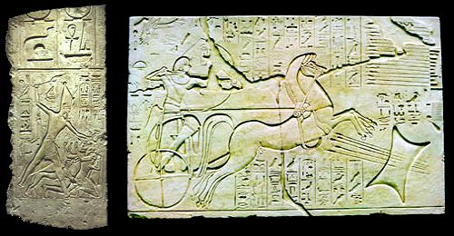
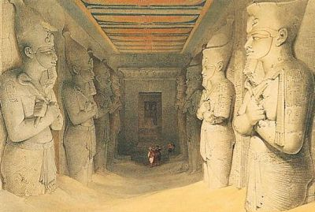
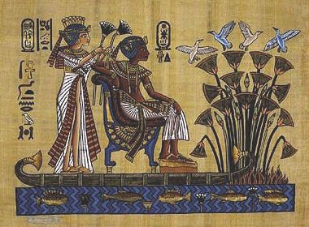
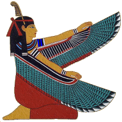

Английский оригинал этой страницы, изобилует фактическими ошибками и неточностями. По возможности, используйте другой ресурс, если вас интересует история древнего Египта. /Примечание редактора/.

Царствующий жрец, храм, царь как посредник между богами и людьми.
Как человек, выполняющий царскую функцию в божественном порядке, фараон
играет важную роль на земле. Именно он отвечает
за поддержание вселенского порядка в согласии с Маат
(Маат), богиней истины и справедливости, как и фараон
происходящей от бога солнца Ра. Эта типично египетская концепция, включающая
понятия истины и справедливости, выполняет многие функции. Если порядок божественного начала нарушается,
силы хаоса, Исефет (Isefet),
могут вновь вырваться на свободу. Для выполнения своего долга, фараон
должен понимать движение звёзд, знать час рассвета, функции богов и даты
грядущих разливов Нила, что было жизненно важно для египтян.
Отношения между людьми – важная функция фараона для поддержания порядка.
Находясь надо всеми, он должен ежедневно поддерживать божественный культ во
всём Египту. Во всех храмах страны жрецы отправляли службы от имени фараона. В
сценах, изображённых в храме, ежедневные божественные ритуалы всегда осуществляет
именно он. Избранный богами фараон является посредником между ними и людьми.
Божества поручили ему возводить для них храмы, украшать их алтари и возносить
им молитвы. Вот почему на стенах храма рядом с богами изображался лишь один
правитель.
Для того, чтобы исполнять эту важную роль, фараону нужна соответствующая жизненная сила. Его божественное право первородства важно, но недостаточно. Он привлекает дополнительные силы для осуществления своей функции во время обрядов коронации, когда он принимает пять имён своей титулатуры. Затем магические силы, привлечённые фараоном благодаря священным религиозным церемониям, понемногу уменьшаются и после тридцати лет правления праздновался особый праздник – Сед (Sed), посвящённый царскому юбилею и имевший целью восстановление потерянных сил фараона. Этот праздник, проходивший под покровительством бога Птаха (Ptah) из Мемфиса, повторяет, в меньшем масштабе, обряд коронации. Кульминацией праздника становится повторение коронации в царском павильоне. В качестве завершения праздничного ритуала, фараон устраивал демонстрацию своих физических возможностей, совершая круг почета. Возможно, эта церемония заменяла примитивный египетский обряд, во время которого фараон ритуально умирал, когда, состарившись, он уже не мог выполнять царские обязанности. За этим праздником Сед, отмечаемым каждые тридцать лет, следовали новые праздники, интервал между ними сокращался, и они происходили каждый раз, когда фараон чувствовал, что ему нужно вновь набраться сил.

Присвоение мира: победоносный фараон
Как верховный полководец, царь лично отвечал за военные походы как с целью остановить вторжение в страну, так и с целью покорения новых земель. Для подавления восстаний и для поддержания порядка, он часто передавал свою власть полководцам и командующим гарнизонами. Он решал, какую стратегию выбрать: наступательную или оборонительную. С детства его обучали военному делу; он умел стрелять из лука, обращаться с мечом, копьём или топором и управлять колесницей.
Бесчисленные тексты и изображения прославляют его как командующего армией, которой он управлял при помощи своей удивительной силы. Начиная с периода нового царства, тема героя-завоевателя становится метафорой силы фараона (топос). Эта тема была частью официальной иконографии царя. Начиная с нового царства, периода завоеваний, создается новый образ фараона -- фараон в битве, фараон на колеснице, фараон, уничтожающий своих врагов.
Армия становится профессиональной начиная с нового царства (Тутмос III, Рамсес II).
Когда в Египет вторглись народности с юга Палестины, называемые греками "гикос" (от египетского выражения "хеку Хасу", "правители других стран"), это стало первым вторжением иноземцев на египетские земли. Оно ознаменовало для Египтян, согласно их идеологии, триумф хаоса во вселенском порядке. Тем не менее, гикосы привели с собой лучших лошадей, колесницы и совершенное бронзовое оружие.

Дворец, местопребывание правительства
Дворец представлял собой архитектурный ансамбль, состоящий из официальной
части, где заседало правительство, и более личной части, царского дворца, который
состоял из жилых помещений для фараона, его семьи, родственников и
приближенных. Официальная часть дворца была примечательна несколькими приемными
залами и троном, на котором восседал фараон, демонстрируя свою власть.
Фараону принадлежала вся страна; он был богатейшим человеком Египта. Часть
своей собственности он передавал храмам, своим вельможам и представителям знати
для того, чтобы они ни в чём не нуждались и могли платить своим служащим. Также
Фараон владел золотыми шахтами, каменоломнями; для него добывали
полудрагоценные камни и изготовляли кожу. Он посылал экспедиции для разработки
этих ресурсов. Именно у него было монопольное право вести дела в этих отраслях
на родине и за границей.
Как глава правительства, фараон окружал себя министрами, которые ему помогали. Он передавал часть своей власти "визирю", эквивалентному нынешнему министру внутренних дел. Этот министр был самым влиятельным человеком страны после фараона. Совет во главе с царём также состоял из главного казначея, управляющего зернохранилищами и управляющего скотными дворами. Исполнительная власть была представлена чиновниками по большей части происходившими из академических, а не из военных кругов. Они создали внушительную и эффективную машину египетской администрации.

Дворец: покои, двор, царская семья
Царские покои находились во внутренней части дворца. Как и большинство жилищ
того времени, дворец, где жил царь, был сложен из сырцового кирпича. Однако он
отличался от более скромных домов знати большими размерами. Дворец также отличался различными архитектурными
деталями из камня: колоннами и дверными косяками. Его стены, покрытые глиной и
штукатуркой, иногда украшались росписями, навеянными природой.
В отличие от устоявшегося мнения, гарем не был местом, где женщины жили
взаперти, отрезанные от внешнего мира. На самом деле, там жили царицы, принцы и
принцессы. Гарем располагался рядом с местом изготовления туалетных
принадлежностей и белья.
Своего расцвета дворцовая жизнь достигла при Аменхотепе III. Производство
стекла было уже на высочайшем уровне. Его изготовляли неподалёку от дворца, и,
разумеется, монополия принадлежала фараону.
Во время амарнского периода царская семья приоткрыла
свою личную жизнь. Ахенатон (Akhenaton)
и Нефертити (Nefertit) представляли
собой любящую пару, такую же, как другие египетские семьи. Хотя Амнхотеп IV (Ахенатон) любил Нефертити, у него были и другие жёны, например, царица Куджа, родившая ему дочь. После смерти Нефертити,
на четырнадцатый год своего правления он женился на одной из дочерей; этому же
примеру последовал и Рамсес II (Ramses II)
‘Маат велика, и её деяния неизменны. В ней не было места для тревоги с самого её сотворения. Кара ждёт того, кто ослушается её законов’
‘Она – путь для неискушённых’

Источник : Кристиана Циглер, Фараон.